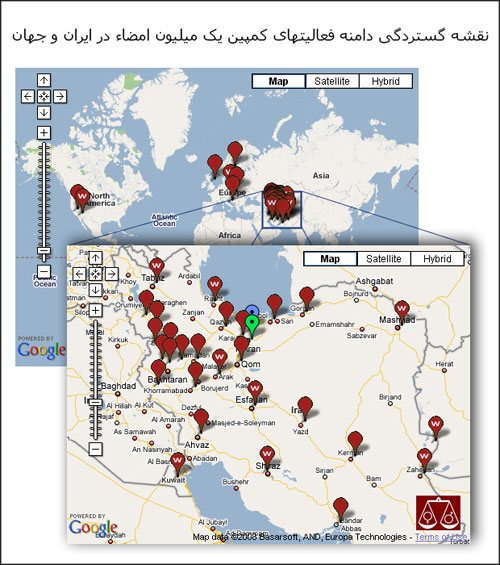

|
|

ابتکار جالب کمپین کالیفرنیا
نقشه گستردگی دامنه فعالیتهای کمپین یک میلیون امضا در ایران و جهان
کمپین کالیفرنیا
دو شنبه20 خرداد 1387
کمپین کالیفرنیا در ابتکاری جالب نقشه ای از گستردگی دامنه کمپین تهیه کرده است.

همان طور که فعالان کمپین کالیفرنیا توضیح داده اند «نقشه جدید همه مرکز فعال کمپین هم در ایران و هم در جهان را نشان می دهد. در این نقش اینترنتی، نشانگرها با حرف "W" نمایشگر مراکزی هستند که وبسایت دارند. نقشه اینترنتی هم اکنون درسایت کالیفرنیا قابل مشاهده هست »
نشانی های سایت کالیفرنیا
می توانید نقشه را هم در سایت کالیفرنیا و هم در آدرس زیر ببیند.